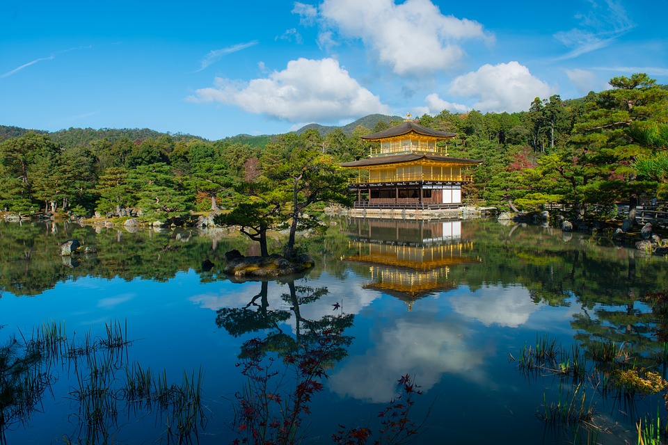
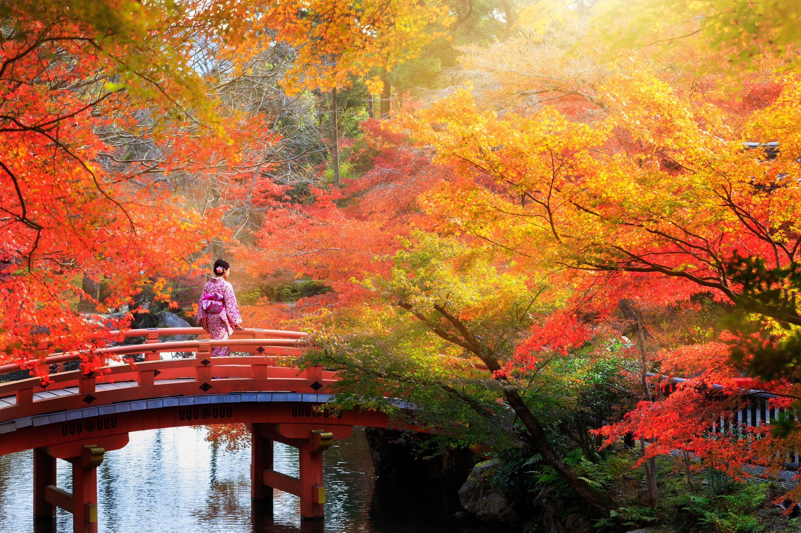
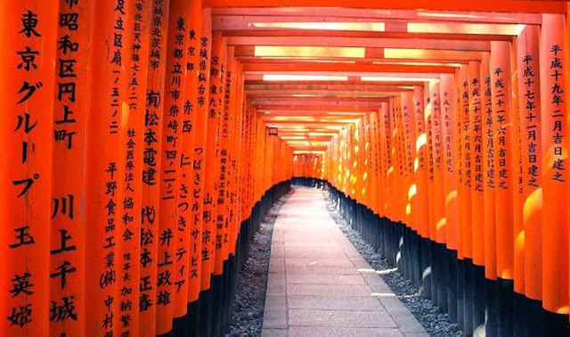
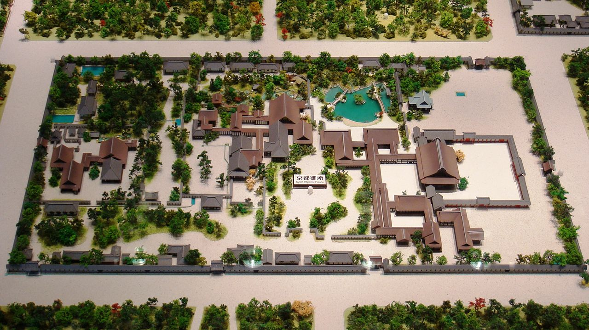

Sejarah

Sejarah Kyoto dimulai sejak Kaisar Kammu (kaisar Jepang ke-50) memindahkan ibu kota dari Nagaoka-kyō ke Heian-kyō, akibat Fujiwara Tanetsugu yang menjadi penanggung jawab pembangunan Nagaoka-kyō tewas dibunuh. Ada penjelasan yang mengatakan ibu kota harus dipindahkan ke Kyoto untuk mengatasi pengaruh agama Buddha di Nara yang kekuatannya terpusat di sejumlah kuil-kuil yang disebut Nanto-jiin（南都寺院). Penjelasan lain mengatakan ibu kota perlu dipindahkan dari ibu kota kekaisaran milik garis keturunan Kaisar Temmu ke ibu kota baru untuk kaisar dari garis keturunan Kaisar Tenji.
Heian-kyō dibangun dengan mematuhi prinsip feng shui. Kyoto dikelilingi gunung-gunung di empat penjuru angin. Di sebelah timur terdapat Sungai Kamo, di sebelah barat terdapat Sungai Katsura yang alirannya meliuk-liuk ke sebelah selatan. Istana didirikan di tengah kota dan wilayah kota dibagi ke dalam blok-blok berbentuk persegi empat meniru model ibu kota istana di Tiongkok. Di tengah-tengah kota terdapat jalan raya utara-selatan bernama Suzaku-Ōji yang sekarang menjadi Jalan Senbon-dōri. Gunung Funaoka menjulang di sebelah utara.
Ekonomi Heian-kyō berkembang dengan pesat karena sistem politik Ritsuryō-sei yang sudah tidak dipraktikkan lagi. Pusat kota berada di sekitar sungai Kamo dan Daidairi-Gosho.
Geografis

Kyoto terletak di bagian selatan dari Prefektur Kyoto. Di dalam kota mengalir beberapa sungai seperti Kamogawa (alirannya bersatu dengan Takanogawa di tengah) di timur, Katsuragawa di barat, dan Ujigawa di selatan. Posisinya berada di Lembah Kyoto (disebut juga Lembah Yamashiro). Lembah Yamashiro sendiri dikelilingi oleh tiga buah gunung, yaitu Higashiyama, Kitayama, dan Nishiyama, dengan ketinggian sekitar 1000 m di atas permukaan laut. Karena letaknya yang dikelilingi pegunungan ini, iklimnya bersifat iklim darat, menyebabkan perbedaan suhu antara siang dan malam, antara musim dingin dan musim panas lumayan besar.
Bagian pusat kota didesain terkotak-kotak seperti papan catur, dengan bentuk jalan yang sebagian besar lurus. Setiap jalan memiliki nama-nama tersendiri, dan sebagian besar persimpangan diberi nama sesuai dengan nama jalan yang bertemu. Saat ini pusat bisnis berada di bagian selatan dari Kyoto Gosho, dengan bagian utara yang lebih tidak berpenduduk memiliki suasana lebih hijau..
Wisata
Kyoto yang sarat dengan peninggalan budaya merupakan tujuan pariwisata budaya paling utama di Jepang. Kyoto selalu indah sepanjang tahun, salju di musim dingin, mekarnya bunga Sakura di musim semi, bukit-bukit yang sejuk di musim panas, dan pemandangan warna-warni daun musim gugur.
Fushimi Inari Taisha (伏見稲荷大社)

Fushimi Inari Taisha (伏見稲荷大社) adalah kuil Shinto yang berada di Fushimi-ku, Kyoto, Jepang. Kuil ini merupakan kuil pusat bagi sekitar 40.000 kuil Inari yang memuliakan Inari. Kuil utama (honden) terletak di kaki Gunung Inari, dan tanah milik kuil mencakup gunung yang tingginya 233 meter.
Di kuil ini dimuliakan Ukanomitama bersama pendampingnya, Satahiko no Ōkami, Ōmiyanome no ōkami, Tanaka no ōkami, dan Shi no ōkami (四 大神).[1] Inari dipercaya sebagai dewa pertanian, sehingga kuil ini dipercaya membawa berkah bagi panen palawija, kesukesan dalam perdagangan bisnis, dan keselamatan di bidang transportasi.
Istana Kekaisaran Kyoto (京都御所 Kyoto-gosho)

adalah bekas istana pemerintahan Kekaisaran Jepang. Para Kaisar bermukim di Istana Kekaisaran Tokyo setelah Restorasi Meiji pada 1869, dan preservasi Istana Kekaisaran Kyoto diperintahkan pada 1877. Saat ini halamannya dibuka untuk umum, dan Badan Rumah Tangga Kekaisaran mentuanrumahi pariwisata umum ke bangunan tersebut beberapa kali dalam sehari.